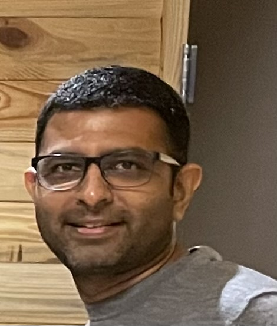

Mentor

Mr. Harsh Tanna
Business Owner & Industrial Operations Engineer
Mr. Harsh Tanna is a business owner and Industrial Operations Engineer with experience in large-scale operations and entrepreneurship. He is affiliated with Publix and owns Taannaz Bronzze Private Limited, bringing real-world industry insight and practical business perspective to this project.
Through his extensive experience in both industrial operations and business ownership, Mr. Tanna provides invaluable guidance on the practical aspects of running a business, managing operations at scale, and navigating the challenges of entrepreneurship. His dual expertise in engineering and business management offers a unique perspective that bridges technical knowledge with real-world business applications.
His insights into large-scale operations, business ownership, and the day-to-day realities of running a company have been instrumental in helping me understand the practical side of entrepreneurship beyond just the initial idea or startup phase.
A Note of Gratitude
I am deeply grateful to Mr. Harsh Tanna for serving as my mentor in the ISM program. His willingness to share his expertise in industrial operations and business ownership has provided invaluable real-world insights that have enhanced my understanding of entrepreneurship and practical business management. Thank you, Mr. Tanna, for your time, wisdom, and commitment to helping me succeed throughout my ISM journey.